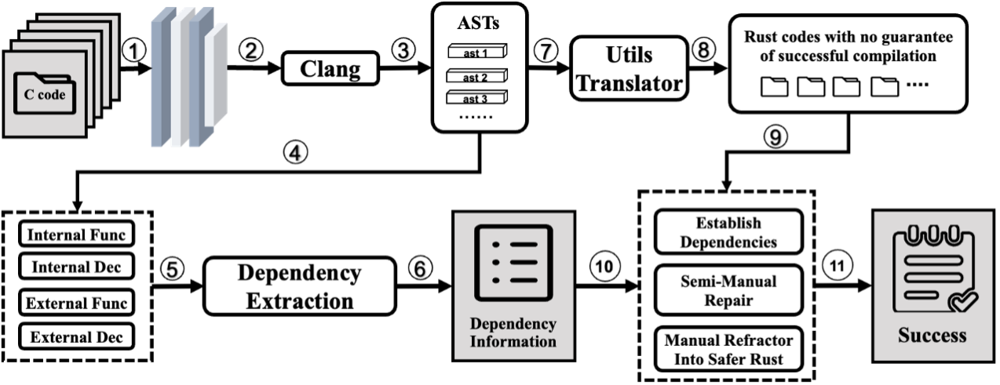

工具原理及使用说明
1. 工具原理
基础命令工具集相对于其他C语言项目而言存在的特点是库文件分散，二进制文件众多且依赖关系错综复杂。比如openeular:22.03-lts中使用的coreutils-9.0就在160余个原地C语言文件和GNUlib中的800余个文件的相互依赖下生成了107个二进制文件。人工梳理这些依赖关系显得非常不现实。
针对这个问题，本工具基于Clang解析的语法树的自动分析依赖。该工具首先先利用Bear等工具获取在编译基础命令时所调用的所有编译命令，得到Clang格式的compile_command.json文件。然后基于该文件通过Clang解析编译期间所涉及的所有C语言文件进行语法树解析，对不同文件之间语法树中出现的调用关系进行提取。因为C语言本身并不支持符号声明和定义之间的精确链接（在Rust中并不区分声明和定义），我们在此基础上设计了模糊匹配的依赖构建框架。依赖构建过程中可以将符号的声明和定义根据用户可调节的不同的模糊程度进行匹配，最终构建得到整个项目的依赖关系。 
2. 工具使用说明
2.1 依赖提取工具
依赖提取工具名字为deps-exporter，使用方式基本如下：
deps-exporter [OPTIONS] <COMPILE_COMMANDS> [--] [EXTRA_CLANG_ARGS]...
用法与ec2rust-transpile工具基本相同，其中COMPILE_COMMANDS为编译命令文件，EXTRA_CLANG_ARGS为额外的Clang参数。两个命令区别在于deps-exporter只会输出依赖关系，而ec2rust-transpile会同时输出转换后的Rust代码。
基础用法可以参考c2rust-transpile的官方文档，或者使用帮助命令deps-exporter --help查看。如下只谈及deps-exporter的特殊用法。
deps-exporter支持的特殊选项如下：
# 指定输出依赖关系的文件（json格式）
--dependency-file <DEPENDENCY_FILE>
Path to a file to write out the dependency information [default: ./dependencies.json]
2.2 依赖构建库/可视化工具
依赖构建库/可视化工具名字为deps-builder，使用方式基本如下：
deps-builder [OPTIONS]
主要参数如下：
--bin <BIN>
Emit Rust dependencies for the given binaries
--bins
Emit Rust dependencies for all binaries (with main defined)
--dependency-dot <DEPENDENCY_DOT>
Path to a file to write the dependency graph to [default: ./dependencies.dot]
--dependency-file <DEPENDENCY_FILE>
Path to a file to with the dependency information [default: ./dependencies.json]
--fuzz-depends-level <FUZZ_DEPENDS_LEVEL>
Use fuzzing dependency checking [default: 0]
其中需要提供一个之前使用deps-exporter或者ec2rust-transpile生成的依赖关系文件（json），deps-builder会根据该文件构建整个项目的依赖关系。构建完成后，deps-builder会输出一个.dot文件，可以使用Graphviz工具将其转换为图片。同时，deps-builder作为一个库也可以被其他工具调用，用于构建整个项目的依赖关系。比如在ec2rust-transpile中就使用了deps-builder来构建整个项目的依赖关系。
其中FUZZ_DEPENDS_LEVEL参数用于控制依赖关系的模糊程度，值越大匹配越模糊，总共有四档如下：
- 当且仅当符号的声明和定义所在的文件路径完全相同才会被匹配。
- 当符号的声明和定义所在的文件名相同才会被匹配，比如
a.c和a.h会被匹配。 - 当符号的声明和定义所在的文件路径相同就会被匹配，比如
/a/b/c/d/x.c和/a/b/c/d/y.h会被匹配。 - 当符号的声明和定义相同则会被匹配。
构建得到的依赖关系是一个有向图，其中节点为文件，边为文件之间的依赖关系。可以使用Graphviz工具将其转换为图片，如下是部分依赖关系图：
其中红色节点为二进制文件，其他是库文件。这里只展示了其中几个二进制且不包含gnulib的依赖关系。
依赖构建会提取每个二进制的有向联通子图作为该二进制的依赖关系，因此可以通过--bin参数指定要提取的二进制文件，也可以通过--bins参数仅提取所有有main函数的二进制文件。
2.3 翻译工具
翻译工具名字为ec2rust-transpile，其中包含了依赖提取工具和依赖构建工具。使用方式和deps-exporter基本相同，只是ec2rust-transpile会同时输出转换后的Rust代码。
其中也包含了deps-builder参数，可以通过--dependency-file参数指定依赖关系文件的输出路径，通过--fuzz-depends-level参数指定依赖关系的模糊程度。
基础命令重构指导方法
1. 依赖关系
基础命令通常使用C语言编写，而且通常将大量二进制放在一个文件夹中，很多时候包含额外的依赖关系。比如coreutils-9.0中，在src文件夹内包含了所有的二进制文件和一些库文件，而在lib文件夹中包含了所有的GNUlib库文件。这些文件之间的依赖关系错综复杂，人工梳理这些依赖关系显得非常不现实。
我们可以利用deps-exporter + deps-builder工具来自动分析依赖关系。先利用Bear等工具获取在编译基础命令时所调用的所有编译命令，得到Clang格式的compile_command.json文件。然后基于该文件通过Clang解析编译期间所涉及的所有C语言文件进行语法树解析，对不同文件之间语法树中出现的调用关系进行提取。最终构建得到整个项目的依赖关系。
当然，如果不局限于分析依赖关系。还可以直接使用ec2rust-transpile工具将C语言代码转换为包含依赖分析的Rust代码，这样可以更好地维护和扩展基础命令。
2. 代码重构
重构代码中需要注意分析基础命令的文件结构。比如对于coreutils来说，二进制全部包含在src中，GNUlib作为一个嵌入式的库文件无法单独提取出来作为库使用。对于这种情况我们通常将整个项目作为一个crate，然后将所有的二进制文件放在src中，然后构建全局的依赖关系。而如果是类似binutils的项目结构而言，binutils内置了多个文件夹作为库来使用，比如bfd、libiberty等。这种情况下，我们可以考虑针对不同文件夹创建Rust的crate，然后在主crate中通过Cargo.toml文件来创建库之间的依赖关系。
3. 代码测试
4. Safer Rust
对于如何将unsafe代码转换为safer代码，我们总结了以下几个指导方法：
- 使用安全的替代方案替代C中裸指针的使用 裸指针操作可能会绕过 Rust 的所有权和生命周期检查，容易导致未定义行为。可以通过使用 Rust 提供的安全引用类型（如 &T 或 &mut T）来替代裸指针操作。如果确实需要使用裸指针，可以将其操作封装在一个安全的抽象中，确保外部调用者只使用安全的接口。
- 使用 Rust 提供的内存管理工具 手动分配和释放内存是导致悬垂指针和内存泄漏的常见原因。尽量避免直接操作内存分配接口（如 std::alloc），而是使用 Rust 提供的内存管理工具，例如 Box 用于堆内存分配，Rc 和 Arc 用于引用计数管理，以及 Vec 用于动态数组管理。这些工具能够自动处理内存的分配和释放，避免资源管理问题。
- 检查数组和内存的边界条件 在 unsafe 块中，操作数组或内存时没有边界检查，可能导致越界访问。可以通过增加显式的边界检查来避免此问题。最好使用 Rust 提供的切片或集合类型，因为它们自带边界检查功能。如果必须使用指针访问，务必手动验证指针的有效性和范围。
- 尽量将 unsafe 代码封装在最小范围内 当必须使用 unsafe 代码时，应将其限制在一个尽可能小的范围内，并在封装时提供安全的接口。这样可以减少暴露给用户的不安全行为，同时降低调试和维护的复杂度。
- 逐步替换和验证 unsafe 代码 将 unsafe 代码安全化时，不应一次性进行大规模重构，而是逐步分阶段替换。每次修改后都需要进行全面的测试，确保修改后的代码依然符合功能需求。可以通过单元测试、集成测试和边界测试来验证代码的安全性。
依赖关系分析
依赖关系分析主要依赖于dep-exporter和dep-builder两个工具，其中dep-exporter用于提取依赖关系，dep-builder用于构建依赖关系。
提取依赖工具前需要先通过Bear等工具获取在编译基础命令时所调用的所有编译命令，得到Clang格式的compile_command.json文件。然后基于该文件通过Clang解析编译期间所涉及的所有C语言文件进行语法树解析，对不同文件之间语法树中出现的调用关系进行提取。最终构建得到整个项目的依赖关系。
具体构建方法已经在工具使用说明中介绍，这里不再赘述。
这里主要针对coreutils和binutils两个项目的依赖关系进行详细说明。
coreutils
coreutils文件核心结构如下：
./coreutils-9.0
|-- gnulib-tests # 一些测试文件
|-- lib # gnulib库文件
`-- src # 二进制文件和一些库文件
此时我们可以针对全局项目进行依赖关系构建，为了方便区分binary和library。utils-translator主动将所有二进制文件放在rust项目的根目录下。此时重构后的Rust项目结构如下：
./coreutils-rust
|-- Cargo.toml
|-- build.rs
|-- rust-toolchain.toml
|-- src # 里面结构同coreutils-9.0
| |-- gnulib_tests
| |-- lib
| `-- src
`-- *.rs # 二进制文件
完整的依赖关系图可以看coreutils-rust
binutils
binutils文件核心结构如下：
./binutils-2.37
|-- libctf # libctf库文件
|-- libiberty # libiberty库文件
|-- opcodes # opcodes库文件
|-- zlib # zlib库文件
|-- bfd # bfd库文件
|-- gprof # gprof二进制文件
|-- ld # ld二进制文件
|-- gas # as二进制文件
|-- gold # gold二进制文件
`-- binutils # binutils二进制文件
可以看到binutils和coreutils最明显的不同是binutils内置了多个文件夹作为库来使用，这种情况下，我们可以考虑针对不同文件夹创建Rust的crate，然后在主crate中通过Cargo.toml文件来创建库之间的依赖关系。
首先我们可以把用bear提取的compile_commands.json文件按照不同的文件夹进行分割，这里提供一个简单的脚本filter.sh来自动实现这个功能。
对于每个compile_commands.json文件，我们考虑两种情况，第一种是作为库crate，第二种是作为二进制crate。对于库crate，依赖关系并不重要，所以我们可以直接用传统的c2rust来转换，对于二进制crate，我们需要考虑内部和外部的依赖关系。对于binutils，外部的依赖关系可以直接在Cargo.toml文件中添加，内部的依赖关系则通过我们的utils-translator工具集来提取。
完整的依赖关系图可以看binutils-rust
utils重构实践
这里将阐述详细的coreutils和binutils两个项目的重构实践。
coreutils
我们选取coreutils-9.0项目进行重构。
首先我们需要安装coreutils的依赖
$ sudo dnf group install -y "Development Tools"
$ sudo dnf install -y wget texinfo openssl-devel gmp-devel
我们还需要安装bear工具和utils-translator工具，安装方式这里不再赘述。为了更好的展示，我们接下来会使用jq，yq和sponge等工具来处理toml文件，但是这些工具并不是必须的。
然后我们下载并配置coreutils-9.0源码
$ wget https://mirrors.tuna.tsinghua.edu.cn/gnu/coreutils/coreutils-9.0.tar.xz
$ tar -xvf coreutils-9.0.tar.xz
$ cd coreutils-9.0
$ ./configure --with-openssl --enable-install-program=arch --enable-no-install-program=kill,uptime,stdbuf
接下来我们需要使用bear工具来获取编译命令
$ bear -- make
此时，当前目录下已经生成了compile_commands.json文件。
为了保证转义正常进行，我们先把一些难以处理的文件删除。
$ jq 'del(.[] | select(.file == "/home/user/coreutils-9.0/src/cksum_pclmul.c")) \
| del(.[] | select(.file == "/home/user/coreutils-9.0/src/factor.c")) \
| del(.[] | select(.file == "/home/user/coreutils-9.0/src/wc_avx2.c")) \
' compile_commands.json >compile_commands2.json
使用utils-translator工具进行转换，这里我们需要设置fuzz-depends-level为1，这样可以保证我们提取的依赖关系更加全面。对于不同项目需要针对性设置不同的fuzz-depends-level。
$ ec2rust-transpile -e compile_commands2.json -o coreutils-rust --detect-binary --emit-binaries --emit-no-lib --fuzz-depends-level 1
此时我们已经在当前目录下生成了coreutils-rust文件夹，里面包含了所有的Rust文件。然后我们需要给Rust项目增加一些外部的依赖关系。
$ cd coreutils-rust
$ cargo add selinux-sys@0.4 -Z sparse-registry
$ sed -i -E 's|(// add unix dependencies below)|\1\n println!("cargo:rustc-flags=-lgmp -lcrypto");|g' ./build.rs
然后我们需要处理的是一些utils-translator工具出现的一些问题，下面是一些常见的问题：
$ sed -i 's|val != 0.|val != f128::f128::new(0)|g' numfmt.rs && \
sed -i 's|f128::f128::new(1.18973149535723176502e+4932)|f128::f128::MAX|g' numfmt.rs && \
sed -i 's|f128::f128::new(1.18973149535723176502e+4932)|f128::f128::MAX|g' getlimits.rs && \
sed -i "$(expr $(wc -l < expr.rs) - 50),\$s|args|_args|g" expr.rs && \
sed -i 's|::std::env::_args()|::std::env::args()|g' expr.rs && \
sed -i -E ':a;N;$!ba;s|if 0 as libc::c_int != 0 \{\} else \{[[:space:]]*unreachable!\(\);[[:space:]]*\};|unreachable!();|g' paste.rs && \
sed -i -E ':a;N;$!ba;s|if 0 as libc::c_int != 0 \{\} else \{[[:space:]]*unreachable!\(\);[[:space:]]*\};|unreachable!();|g' ptx.rs && \
sed -i -E ':a;N;$!ba;s|if 0 as libc::c_int != 0 \{\} else \{[[:space:]]*unreachable!\(\);[[:space:]]*\};|unreachable!();|g' seq.rs && \
sed -i -E ':a;N;$!ba;s|if 0 as libc::c_int != 0 \{\} else \{[[:space:]]*unreachable!\(\);[[:space:]]*\};|unreachable!();|g' sort.rs && \
sed -i 's|(\*ap).a.a_longdouble = args.arg::<f128::f128>();|(*ap).a.a_longdouble = args.arg::<libc::c_double>();|g' src/lib/printf_args.rs
和一个依赖关系版本的问题
$ cargo update --package unicode-width --precise 0.1.13 -Z sparse-registry
然后我们跑一个cargo fix来修复一些rust可以解决的问题
$ cargo fix --broken-code --bins --keep-going -Z unstable-options -Z sparse-registry --allow-no-vcs || true
注意因为之前并没有完全解决所有的问题，所以这里可能会有一些报错，但是不影响整体的转换。
此时还需要手动对二进制文件增加一个外部依赖。
sed -i 's/extern crate libc;/extern crate selinux_sys;\nextern crate libc;/g' ./*.rs
此时我们可以运行cargo build来构建整个项目。
$ cargo build --bins --keep-going -Z unstable-options -Z sparse-registry || true
至此应当可以预期有81个二进制文件成功构建。
binutils
同样我们也先安装binutils的项目依赖
$ sudo dnf group install -y "Development Tools"
$ sudo dnf install -y wget texinfo openssl-devel gmp-devel
我们选取binutils-2.37项目进行重构。
$ wget https://mirrors.tuna.tsinghua.edu.cn/gnu/binutils/binutils-2.37.tar.xz
$ tar -xf binutils-2.37.tar.xz
然后我们需要使用bear工具来获取编译命令
$ cd binutils-2.37
$ ./configure \
--enable-ld \
--enable-gold=default \
--with-sysroot=/ \
--enable-deterministic-archives=no \
--enable-lto \
--enable-compressed-debug-sections=none \
--enable-generate-build-notes=no \
--enable-targets=x86_64-pep --enable-relro=yes \
--enable-plugins \
--enable-shared
$ bear -- make
此时，当前目录下已经生成了compile_commands.json文件，根据之前依赖关系分析的方法，我们可以使用filter.sh脚本来分割不同的文件夹。
$ ./filter.sh ./compile_commands.json
接下来我们进行逐个库的转换。
# zlib 库
$ ec2rust-transpile -e compile_commands_zlib.json -o ./binutils-rust/zlib
$ cd ./binutils-rust/zlib
$ yq eval '.package.name="zlib-sys" | .lib.name="zlib_sys"' Cargo.toml -oj | yj -jt | sponge Cargo.toml
$ cargo add f128 -Z sparse-registry
$ cargo build -Z sparse-registry
# bfd 库
$ cd `path/to/binutils-2.37`
$ ec2rust-transpile -e compile_commands_bfd.json -o ./binutils-rust/bfd
$ cd ./binutils-rust/bfd
$ yq eval '.package.name="bfd-sys" | .lib.name="bfd_sys"' Cargo.toml -oj | yj -jt | sponge Cargo.toml
$ cargo add f128 -Z sparse-registry && \
cargo add zlib-sys --path=../zlib -Z sparse-registry
# 临时修复一些Rust处理不了的问题
$ sed -i 's/*mut __va_list_tag/::core::ffi::VaList/g' ./src/*.rs
$ sed -i 's|args\[i as usize\].ld = ap.arg::<f128::f128>();|args[i as usize].d = ap.arg::<libc::c_double>();|g' ./src/bfd.rs
$ cargo fix --broken-code -Z sparse-registry --allow-no-vcs
$ cargo build -Z sparse-registry
# libctf 库
$ cd `path/to/binutils-2.37`
$ ec2rust-transpile -e compile_commands_libctf.json -o ./binutils-rust/libctf
$ cd ./binutils-rust/libctf
$ yq eval '.package.name="libctf-sys" | .lib.name="libctf_sys"' Cargo.toml -oj | yj -jt | sponge Cargo.toml
$ cargo add zlib-sys --path=../zlib -Z sparse-registry
$ cargo build -Z sparse-registry
# libiberty 库
$ cd `path/to/binutils-2.37`
$ ec2rust-transpile -e compile_commands_libiberty.json -o ./binutils-rust/libiberty
$ yq eval '.package.name="libiberty-sys" | .lib.name="libiberty_sys"' Cargo.toml -oj | yj -jt | sponge Cargo.toml
$ cargo add f128 -Z sparse-registry
# 临时修复一些Rust处理不了的问题
$ sed -i '/unsafe extern "C" fn d_demangle_callback(/{n;n;n;n;n;n;n;N;N;N;N;N;N;N;N;N;N;N;N;d;}' ./src/cp_demangle.rs && \
sed -i '/unsafe extern "C" fn d_demangle_callback(/{n;n;n;n;n;n;n;n;N;N;d;}' ./src/cp_demangle.rs && \
sed -i -E ':a;N;$!ba;s|(let mut comps: Vec::<demangle_component>) = ::std::vec::from_elem\(\n([[:space:]]*let mut subs: Vec::<\*mut demangle_component>) = ::std::vec::from_elem\(|\1;\n\2;|g' ./src/cp_demangle.rs
$ cargo build -Z sparse-registry
# opcodes 库
$ cd `path/to/binutils-2.37`
# 这里我们无法直接使用utils-translator工具，因为opcodes库中的代码长度过大，所以我们直接使用C语言编译出来的库文件
$ cd ./opcodes
$ ar rcs libopcodes.a *.o
$ mkdir `path/to/binutils-2.37`/binutils-rust/opcodes
$ cp ./libopcodes.a `path/to/binutils-2.37`/binutils-rust/opcodes`
# ld 库
$ cd `path/to/binutils-2.37`
# 删除所有testplug相关的条目
$ jq '[.[] | select(.file | contains("testplug") | not)]' compile_commands_ld.json | sponge compile_commands_ld.json
# 转译ld库
$ ec2rust-transpile -e compile_commands_ld.json -o ./binutils-rust/ld --detect-binary --emit-binaries --emit-no-lib --fuzz-depends-level 2
$ cd ./binutils-rust/ld
# 添加依赖
$ cargo add bfd-sys --path=../bfd -Z sparse-registry && \
cargo add libiberty-sys --path=../libiberty -Z sparse-registry && \
cargo add libctf-sys --path=../libctf -Z sparse-registry && \
cargo add zlib-sys --path=../zlib -Z sparse-registry
# 临时修复问题
$ sed -i 's|*mut __va_list_tag|::core::ffi::VaList|g' ./src/*.rs ./ldmain.rs && \
sed -i -E ':a;N;$!ba;s|;\n[[:space:]]*init(\n[[:space:]]*\})|\1|g' ./src/ei386pe.rs ./src/ei386pep.rs && \
sed -i -E 's|let mut init = ([0-9a-zA-Z_]+) \{|\1 \{|g' ./src/ei386pe.rs ./src/ei386pep.rs && \
sed -i 's/extern crate libc;/extern crate bfd_sys;\nextern crate libctf_sys;\nextern crate libiberty_sys;\nextern crate zlib_sys;\nextern crate libc;/g' ./ldmain.rs
# 自动修复代码
$ cargo fix --broken-code -Z sparse-registry --allow-no-vcs
# 编译ld库
$ cargo build -Z sparse-registry
# binutils 二进制
$ ec2rust-transpile -e compile_commands_binutils.json -o ./binutils-rust/binutils --detect-binary --emit-binaries --emit-no-lib
$ cd ./binutils-rust/binutils
$ cargo add bfd-sys --path=../bfd -Z sparse-registry && \
cargo add libiberty-sys --path=../libiberty -Z sparse-registry && \
cargo add libctf-sys --path=../libctf -Z sparse-registry && \
cargo add zlib-sys --path=../zlib -Z sparse-registry
# 添加依赖库路径到构建脚本
$ sed -i -E 's|(// add unix dependencies below)|\1\n println!("cargo:rustc-flags=-L../opcodes -l opcodes");|g' ./build.rs
# 修复 extern crate 顺序和依赖
$ sed -i 's/extern crate libc;/extern crate bfd_sys;\nextern crate libctf_sys;\nextern crate libiberty_sys;\nextern crate zlib_sys;\nextern crate libc;/g' ./*.rs
$ cargo fix --broken-code -Z sparse-registry --allow-no-vcs
$ cargo build -Z sparse-registry
# as 库 (GNU 汇编器)
$ cd `path/to/binutils-2.37`
$ ec2rust-transpile -e compile_commands_gas.json -o ./binutils-rust/gas --detect-binary --emit-binaries --emit-no-lib
$ cd ./binutils-rust/gas
$ cargo add bfd-sys --path=../bfd -Z sparse-registry && \
cargo add libiberty-sys --path=../libiberty -Z sparse-registry && \
cargo add libctf-sys --path=../libctf -Z sparse-registry && \
cargo add zlib-sys --path=../zlib -Z sparse-registry
# 添加依赖库路径到构建脚本
$ sed -i -E 's|(// add unix dependencies below)|\1\n println!("cargo:rustc-flags=-L../opcodes -l opcodes");|g' ./build.rs
# 修复函数声明中的问题
$ sed -i -E 's/(unsafe extern "C" fn operand_type_(xor|and|or|and_not)\()/#[allow(unconditional_panic)]\n\1/g' ./src/config/tc_i386.rs && \
sed -i '/pub type flag_code_0;/d' ./src/config/tc_i386.rs && \
sed -i 's/flag_code_0/flag_code/g' ./src/config/tc_i386.rs
$ sed -i 's/extern crate libc;/extern crate bfd_sys;\nextern crate libctf_sys;\nextern crate libiberty_sys;\nextern crate zlib_sys;\nextern crate libc;/g' ./*.rs
$ cargo fix --broken-code -Z sparse-registry --allow-no-vcs
$ cargo build -Z sparse-registry
# gprof 库
$ cd `path/to/binutils-2.37`
$ ec2rust-transpile -e compile_commands_gprof.json -o ./binutils-rust/gprof --detect-binary --emit-binaries --emit-no-lib --fuzz-depends-level 2
$ cd ./binutils-rust/gprof
$ cargo add bfd-sys --path=../bfd -Z sparse-registry && \
cargo add libiberty-sys --path=../libiberty -Z sparse-registry && \
cargo add libctf-sys --path=../libctf -Z sparse-registry && \
cargo add zlib-sys --path=../zlib -Z sparse-registry
# 添加依赖库路径到构建脚本
$ sed -i -E 's|(// add unix dependencies below)|\1\n println!("cargo:rustc-flags=-L../opcodes -l opcodes");|g' ./build.rs
# 修复 extern crate 顺序和依赖
$ sed -i 's/extern crate libc;/extern crate bfd_sys;\nextern crate libctf_sys;\nextern crate libiberty_sys;\nextern crate zlib_sys;\nextern crate libc;/g' ./*.rs
$ cargo fix --broken-code -Z sparse-registry --allow-no-vcs
$ cargo build -Z sparse-registry
最后我们根据Rust的sub-crate机制，我们需要修改各个crate的Cargo.toml文件，使得他们能够正确的依赖。
具体可以直接参考我们转译好的仓库binutils-rust。
兼容性适配与验证
在GNU utils中的工具经过Rust重写后，我们需要对其进行兼容性适配与验证，具体来说，要对其开展功能测试，以保证其功能的正确性。我们主要采用复用GNU已有的测试用例的方式，来确认Rust重写后的工具功能是否与原工具一致。
建议使用全新的GNU utils环境进行测试，对于Rust转译所对应的GNU utils版本，可以使用如下命令进行下载：
对binutils：
wget https://ftp.gnu.org/gnu/binutils/binutils-2.37.tar.gz
tar -zxvf binutils-2.37.tar.gz
对coreutils：
git clone --recurse-submodules https://github.com/coreutils/coreutils.git
cd coreutils
git fetch --all --tags
git checkout tags/v9.0
找到二进制路径
首先，为了能够运行测试，我们需要找到编译后的二进制文件的路径。在GNU utils中，二进制文件的路径一般在MakeFile中定义，可以通过MakeFile中的关键词来找到对应的二进制文件路径。
寻找MakeFile中的可执行文件TARGET目录
在MakeFile中的搜索FOR_TARGET关键词，如ld命令对应LD_FOR_TARGET，可以看到结果如下：
LD_FOR_TARGET=$$r/$(HOST_SUBDIR)/ld/ld-new
又如as命令对应AS_FOR_TARGET，可以看到结果如下:
AS_FOR_TARGET=$$r/$(HOST_SUBDIR)/gas/as-new
寻找编译后的二进制可执行文件
例：通过find命令寻找编译后的二进制文件：
find ./ -type f ! -name "*.*" | grep "ld"
仅限coreutils的简化版操作
在coreutils的测试环境中会更简单一些，因为coreutils的MakeFile中定义了TESTS_ENVIRONMENT变量，并会在测试时加载作为环境变量，其中部分片段如下：
TESTS_ENVIRONMENT = \
...
PATH='$(abs_top_builddir)/src$(PATH_SEPARATOR)'"$$PATH" \
...
而向前查找abs_top_builddir可以发现其在./configure的时候被定义为了项目所在的文件夹，作为印证，我们确实可以直接在项目所在的文件夹的src目录下找到所有编译后的二进制文件。
替换测试中的二进制
为了借用GNU已有的功能测试，我们需要修改和替换测试中调用的二进制，达到测试项目复用的目的。下面介绍两种替换方式。
直接替换二进制文件
因为在MakeFile中已经定义了编译好后的target二进制文件路径，可以将rust重写后的二进制文件替换到对应的路径下并命名为对应的文件名，已实现对原二进制文件的覆盖。
如ld项目的二进制文件位于binutils-2.37/ld/ld-new，可以将rust重写后的二进制文件替换到binutils-2.37/ld/ld-new路径下并命名为ld-new。例如使用如下命令
rm -rf ld/ld-new
cp /home/user/binutils-2.37/rust/ld/target/debug/ld ld/ld-new
如as项目的二进制文件位于binutils-2.37/gas/as-new，可以将rust重写后的二进制文件替换到binutils-2.37/gas/as-new路径下并命名为as-new。例如使用如下命令
rm -rf gas/as-new
cp /home/user/binutils-2.37/rust/as/target/debug/as gas/as-new
对于coreutils中的项目，因为其所有二进制文件都存放于src文件夹下，因此我们可以直接将rust转译后的二进制替换到src文件夹下
rsync -avh --progress /home/user/coreutils-rust/target/debug/ /home/user/coreutils-test/src/
修改测试用例中的二进制文件路径
GNU的coreutils和binutils都使用DejaGnu测试框架，其中如使用二进制的路径等内容会在 testsuite/config/default.exp文件中
如ld项目的testsuite/config/default.exp中，搜索ld-new可见如下结果：
...
if ![info exists ld] then {
set ld [findfile $base_dir/ld-new $base_dir/ld-new [transform ld]]
}
...
if ![info exists LD] then {
set LD [findfile $base_dir/ld-new ./ld-new [transform ld]]
}
...
# Set LD CLASS to "64bit" for a 64-bit *host* linker.
if { ![info exists LD_CLASS] } then {
set REAL_LD [findfile $base_dir/.libs/ld-new .libs/ld-new $LD [transform ld]]
set readelf_output [run_host_cmd "$READELF" "-h $REAL_LD"]
if { [regexp {[ \t]+Class:[ \t]+ELF64} $readelf_output] } then {
set LD_CLASS 64bit
} else {
set LD_CLASS 32bit
}
}
...
可按照如下方式修改
...
set ld /home/user/binutils-2.37/rust/ld/target/debug/ld
if ![info exists ld] then {
set ld [findfile $base_dir/ld-new $base_dir/ld-new [transform ld]]
}
...
set LD /home/user/binutils-2.37/rust/ld/target/debug/ld
if ![info exists ld] then {
set LD [findfile $base_dir/ld-new ./ld-new [transform ld]]
}
...
set REAL_LD /home/user/binutils-2.37/rust/ld/target/debug/ld
# Set LD_CLASS to "64bit" for a 64-bit *host* linker.
if { ! [info exists LD_CLASS] } then {
set REAL_LD [findfile $base_dir/.libs/ld-new .libs/ld-new $LD [transform ld]]
set readelf_output [run_host_cmd "$READELF" "-h $REAL_LD"]
if {[regexp {[\t]+Class:[\t]+ELF64} $readelf_output] } then {
set LD_CLASS "64bit"
} else {
set LD_CLASS "32bit"
}
}
...
对于coreutils中的项目，因为其所有二进制文件都存放于src文件夹下，因此我们仅需将$(abs_top_builddir)/src的地址修改为rust重写后的二进制存放目录即可
运行测试并生成测试报告
运行测试
在binutils中，可以通过如下命令运行完整测试：
./configure
make check
也可以分别运行下列命令分别运行binutils、gas、ld的测试：
make check-binutils
make check-gas
make check-ld
在 binutils 测试运行完成后，结果摘要将位于 binutils 目录中的 binutils.sum 文件中。更详细的信息也将在 binutils/binutils.log 文件中提供。对于 gas 测试套件，结果位于 gas/testsuite/gas.sum 和 gas/testsuite/gas.log 文件中，而对于 ld 测试套件，它们位于 ld/ld.sum 和 ld/ld.log 文件中。
在 coreutils 中，可以通过如下命令运行完整测试：
./bootstrap --skip-po --force
./configure --with-openssl --enable-install-program=arch --enable-no-install-program=kill,uptime
RUN make check -j $(nproc) RUN_EXPENSIVE_TESTS=yes RUN_VERY_EXPENSIVE_TESTS=yes
在 coreutils 测试运行完成后，结果和详细的运行记录将位于 coreutils 目录中的 tests/test-suite.log 文件中。
生成测试报告
在所提供的Dockfile中，我们分别准备一份使用了GNU utils原本二进制的测试环境和一份使用了Rust重写后的二进制的测试环境，以便于对比。对于binutils，这两个环境分别位于/home/user/FunctionTest/binutils和/home/user/FunctionTest/rust-binutils；对于coreutils，这两个环境分别位于/home/user/test/coreutils-origin和/home/user/test/coreutils-rust。
我们提供了一个diff.py脚本以便快速对比两个测试环境的测试环境的异同。在binutils中，运行：
cd /home/user/FunctionTest && python3 diff.py
产生形如下方的输出：
----------ld----------
GNU:PASS: bootstrap
Rust:UNTESTED: bootstrap
GNU:PASS: bootstrap with strip
Rust:UNTESTED: bootstrap with strip
GNU:PASS: bootstrap with -Wl,--traditional-format
Rust:UNTESTED: bootstrap with -Wl,--traditional-format
GNU:PASS: bootstrap with -Wl,--no-keep-memory
Rust:UNTESTED: bootstrap with -Wl,--no-keep-memory
GNU:PASS: bootstrap with -Wl,--relax
Rust:UNTESTED: bootstrap with -Wl,--relax
----------gas----------
No difference found.\n
----------binutils----------
No difference found.\n
在coreutils中，运行：
cd /home/user/test && python3 diff.py
产生形如下方的输出：
Functional Test Result:
Rust:
FAIL: tests/misc/sort-month
FAIL: tests/misc/invalid-opt
FAIL: tests/misc/sort
FAIL: tests/misc/cut
FAIL: tests/misc/numfmt
FAIL: tests/misc/join
GNU:
稳定性与性能测试
为了确认稳定性、性能等指标，我们需要记录测试的具体运行时间，以便后续与原GNU utils或不同重构版本之间对比。下面也介绍两种记录方式。
使用性能测试工具hyperfine
Hyperfine 是一个命令行模式的基准测试工具，支持多平台安装，提供统计分析、自定义命令执行、缓存清理、参数化测试等多种功能，可以导出结果为多种格式。
我们可以使用下面的命令测试粗粒度地统计整个测试过程的的运行时间：
hyperfine --warmup 3 "cd /home/user/FunctionTest/rust-binutils && make check-ld" "cd /home/user/FunctionTest/binutils && make check-ld" --export-csv /home/user/binutils_result.csv --export-json /home/user/binutils_result.json --export-markdown /home/user/binutils_result.md
其中cd /home/user/FunctionTest/rust-binutils && make check-ld和cd /home/user/FunctionTest/binutils && make check-ld是两条要进行对比的具体运行的测试命令，分别对应Rust转译后二进制的测试和原GNU utils的测试。--warmup 3表示预热3次，预热的目的是缓解基准测试结果收到磁盘缓存的影响。对每个测试命令，在预热之后会执行十次并记录相关的运行耗时、计算平均耗时/方差等统计数据，若要修改运行的次数，可以添加-r/--runs <times>选项。--export-csv /home/user/ld_result.csv表示在对应目录位置导出csv格式的结果，--export-json /home/user/ld_result.json表示在对应目录位置导出json格式的结果，--export-markdown /home/user/ld_result.md表示在对应目录位置导出markdown格式的结果。
经过一段时间的运行后，我们可以在对应的目录下找到生成的结果文件，以markdown格式为了，结果应如下所示：
| Test | Mean [s] | Min [s] | Max [s] | Relative |
|---|---|---|---|---|
cd /home/user/FunctionTest/rust-binutils && make check-ld | 151.721 ± 1.295 | 150.342 | 154.450 | 1.00 |
cd /home/user/FunctionTest/binutils && make check-ld | 159.884 ± 1.022 | 158.559 | 162.088 | 1.05 ± 0.01 |
从结果中我们可以看到，Rust转译后的二进制运行时间运行完整测试的耗时相对于原GNU utils的运行时间略有增加，但是差距很小。
通过二进制套壳记录运行时间
hyperfine只能记录整个测试过程的运行时间，无法精确地记录经过和未经过Rust重写的二进制文件在测试过程中具体的运行时间，可能受到bash、DejaGnu等测试环境中其他因素的影响。因此，我们可以通过binary wrapping的方式，用外置程序调用原本希望进行测试的二进制文件，同时记录每次调用的运行时间，并在测试结束后进行统计以及对比。
我们可以通过一个bash脚本来实现这一功能，脚本如下：
#!/bin/bash
a=$(date +%s%N)
/home/user/test/coreutils-origin/src/{file} "$@"
r=$?
b=$(date +%s%N)
echo "$(echo "($b - $a)" | bc)" >> /home/user/GNU_times/{file}_time.txt
exit $r
其中{file}的部分是需要进行测试的二进制文件名，我们可以将这个脚本命名为与原二进制相同的文件名，然后使用《兼容性适配与验证》中所介绍的二进制文件替换方法，从而实现通过此脚本调用被测二进制文件的“套壳”效果。在测试中，每次调用被测二进制文件时，脚本会记录该次调用的开始时间和结束时间，并将时间差添加到/home/user/GNU_times/{file}_time.txt文件中。通过对date使用+%s%N参数，我们可以获得纳秒级的时间戳，对于每次二进制调用，该时间精度足够记录有效的非零记录。
需要注意，_time.txt文件的路径应该是一个已经存在的文件，否则脚本会报错。可以使用python脚本来批量创建这些套壳脚本和时间记录文件，以便于后续的测试。如对于coreutils这样所有二进制文件都一起存放于src文件夹下的项目，我们可以使用如下python脚本：
# init.py
import os
import shutil
import sys
files = [
"base32_basenc","base64_basenc","basename","basenc_basenc","bench_md5","bench_sha1","bench_sha224","bench_sha256","bench_sha384","bench_sha512","cat","chcon","chgrp","chmod","chown","chroot","comm","cp","cut","dircolors","dirname","du","echo","env","expand","expr","false","fmt","fold","getlimits","groups","head","hostid","id","join","link","ln","locale","logname","make_prime_list","mkfifo","mknod","mktemp","mv","nice","nl","nohup","nproc","numfmt","paste","pathchk","pinky","pr","printenv","pwd","readlink","realpath","rm","runcon","shred","shuf","sleep","sort","split","sync","tac","tail","tee","test_localcharset","timeout","tr","true","truncate","tsort","tty","unexpand","uniq","unlink","users","whoami","yes",]
def write_file(file):
with open(file, 'w') as f:
# 创建时间记录文件
os.system(f'touch /home/user/GNU_times//{file}_time.txt')
f.write(f"""
#!/bin/bash
a=$(date +%s%N)
/home/user/test/coreutils-origin/src/{file} "$@"
r=$?
b=$(date +%s%N)
echo "$(echo "($b - $a)" | bc)" >> /home/user/GNU_times//{file}_time.txt
exit $r
""")
# 删除时间记录文件夹
shutil.rmtree(f'/home/user/GNU_times', ignore_errors=True)
# 创建时间记录文件夹
os.system('mkdir /home/user/GNU_times/')
# 依次创建套壳脚本和时间记录文件
for file in files:
write_file(file)
os.system(f'chmod +x {file}')
在测试结束后，我们可以通过对这些时间记录文件进行统计，将单个时间记录文件中的时间求和，就能够精确得到每个二进制文件在测试中的总运行时间。我们同样可以使用python脚本来实现这一功能，如下：
# statis.py
# 创建一个../time_{时间戳}文件夹
import os
import time
t = int(time.time())
os.system(f'mkdir ../time_{t}') # 创建一个../time_{时间戳}文件夹用于保存结果
# 读取../time目录下的所有文件
files = os.listdir('../GNU_times')
# 遍历文件
for file in files:
# 读取文件内容
with open(f'../GNU_times/{file}', 'r') as f:
# 文件中的每行内容都是一个以纳秒为单位的时间，将其求和
total_time = sum([int(line) for line in f.readlines()])
# 将结果保存到time_{时间戳}文件夹下的{file}文件中
with open(f'../time_{t}/{file}', 'w') as f:
f.write(str(total_time))
# 将../GNU_times文件夹保存为../time_{t}_raw文件夹
os.system(f'mv ../GNU_times ../time_{t}_raw')
参考hyperfine的测试方法，我们可以运行多次测试，然后对其进行统计，得到每个二进制文件的平均运行时间、方差等统计数据，从而一定程度上消除测试环境中的其他因素对测试结果的影响，得到更加可靠的测试结果方便后续对比。
以运行十次coreutils的GNU测试为例：
for i in {1..10}
do
echo "运行第 $i 次"
cd /home/user/coreutils-rust/target/debug && python3 init.py # 创建套壳脚本和时间记录文件，脚本位置仅供参考
cd /home/user/test/coreutils-rust && make check -j $(nproc) RUN_EXPENSIVE_TESTS=yes RUN_VERY_EXPENSIVE_TESTS=yes || true # 运行测试
cd /home/user/coreutils-rust/target/debug && python3 statics.py # 统计结果，脚本位置仅供参考
done
echo "全部运行完成"
测试完成后，我们可以计算平均值、方差等统计数据，并将其保存到一个json文件中：
# 获取文件夹下所有格式为time_\d+的文件夹
import os
import re
import shutil
print(dirs)
files = [
"base32_basenc","base64_basenc","basename","basenc_basenc","bench_md5","bench_sha1","bench_sha224","bench_sha256","bench_sha384","bench_sha512","cat","chcon","chgrp","chmod","chown","chroot","comm","cp","cut","dircolors","dirname","du","echo","env","expand","expr","false","fmt","fold","getlimits","groups","head","hostid","id","join","link","ln","locale","logname","make_prime_list","mkfifo","mknod","mktemp","mv","nice","nl","nohup","nproc","numfmt","paste","pathchk","pinky","pr","printenv","pwd","readlink","realpath","rm","runcon","shred","shuf","sleep","sort","split","sync","tac","tail","tee","test_localcharset","timeout","tr","true","truncate","tsort","tty","unexpand","uniq","unlink","users","whoami","yes",]
sums = {}
mean = {}
stddev = {}
dirs = [d for d in os.listdir('/home/user/GNU_times') if re.match(r'time_\d+$', d)]
# 对每个files，对所有文件夹下的file_time.txt文件求和
for file in files:
total_time = 0
tmp = []
for d in dirs:
with open(f'/home/user/GNU_times/{d}/{file}_time.txt', 'r') as f:
this_time = sum([int(line) for line in f.readlines()])
total_time += this_time
tmp.append(this_time)
sums[file] = total_time
mean[file] = total_time / len(dirs)
# 计算标准差
stddev[file] = (sum([(t - mean[file]) ** 2 for t in tmp]) / len(dirs)) ** 0.5
# 输出结果，全部将结果从ns转为s
for file in files:
print(f'{file}: {sums[file] / 10**9}s, {mean[file] / 10**9}s, {stddev[file] / 10**9}s')
print('-------------------')
dirs_rust = [d for d in os.listdir('rust') if re.match(r'time_\d+$', d)]
print(dirs_rust)
sums_rust = {}
mean_rust = {}
stddev_rust = {}
dirs = [d for d in os.listdir('/home/user/Rust_times') if re.match(r'time_\d+$', d)]
# 对每个files，对所有文件夹下的file_time.txt文件求和
for file in files:
total_time = 0
tmp = []
for d in dirs_rust:
with open(f'/home/user/Rust_times/{d}/{file}_time.txt', 'r') as f:
this_time = sum([int(line) for line in f.readlines()])
total_time += this_time
tmp.append(this_time)
sums_rust[file] = total_time
mean_rust[file] = total_time / len(dirs_rust)
# 计算标准差
stddev_rust[file] = (sum([(t - mean_rust[file]) ** 2 for t in tmp]) / len(dirs_rust)) ** 0.5
# 输出结果，全部将结果从ns转为s
for file in files:
print(f'{file}: {sums_rust[file] / 10**9}s, {mean_rust[file] / 10**9}s, {stddev_rust[file] / 10**9}s')
with open('result.json', 'w') as f:
json.dump({
'mean': mean,
'stddev': stddev,
'mean_rust': mean_rust,
'stddev_rust': stddev_rust,
}, f)
对于result.json文件，我们可以直接查看并对比需要的数据，也可以通过python脚本进行进一步的处理，如绘制图表、进行进一步计算等。
import matplotlib.pyplot as plt
import numpy as np
import json
# 读取 JSON 文件
with open('coreutils/result.json', 'r') as f:
data = json.load(f)
with open('binutils/result.json', 'r') as f:
data_ = json.load(f)
# 提取 values 和 errors
values_gnu_ = list(data['mean'].values()) + list(data_['mean'].values())
errors_gnu_ = list(data['stddev'].values()) + list(data_['stddev'].values())
values_rust_ = list(data['mean_rust'].values()) + list(data_['mean_rust'].values())
errors_rust_ = list(data['stddev_rust'].values()) + list(data_['stddev_rust'].values())
names_ = list(data['mean'].keys()) + list(data_['mean'].keys())
# 打印所有列表的len
values_gnu=[]
values_rust=[]
errors_gnu=[]
errors_rust=[]
names=[]
for i in range(len(names_)):
if values_gnu_[i] == 0 and values_rust_[i] == 0:
continue
values_gnu.append(values_gnu_[i])
values_rust.append(values_rust_[i])
errors_gnu.append(errors_gnu_[i])
errors_rust.append(errors_rust_[i])
names.append(names_[i])
# 设置行数和列数
n_plots = len(names)
n_cols = 8
n_rows = n_plots // n_cols + 1
# 生成示例数据
categories = ['GNU', 'Rust']
# 创建n行m列的子图
fig, axes = plt.subplots(n_rows, n_cols, figsize=(20, 30)) # 画布尺寸调整适合多个子图
plt.subplots_adjust(hspace=0.5) # 调整上下间距
rust_quicker_than_gnu = 0
gnu_quicker_than_rust = 0
# 遍历每个子图进行绘制
for i in range(n_rows):
for j in range(n_cols):
index_ = i * n_cols + j # 当前子图索引
index = index_
if index >= n_plots :
axes[i, j].axis('off')
continue
ax = axes[i, j] # 选择当前子图
if values_gnu[index] > values_rust[index]:
rust_quicker_than_gnu += 1
else:
gnu_quicker_than_rust += 1
# 设置values_gnu和values_rust的对比
ax.bar(categories, [values_gnu[index], values_rust[index]], yerr=[errors_gnu[index], errors_rust[index]], capsize=3,
color='skyblue', edgecolor='black')
# 设置子图标题
ax.set_title(names[index])
# 设置字体大小
ax.title.set_fontsize(16)
ax.xaxis.label.set_fontsize(14)
ax.yaxis.label.set_fontsize(14)
ax.tick_params(axis='both', which='major', labelsize=12)
plt.show()
plt.savefig('result.png') # 保存图片
# 计算rust比gnu快的次数和gnu比rust快的次数
print(f'rust quicker than gnu: {rust_quicker_than_gnu}')
print(f'gnu quicker than rust: {gnu_quicker_than_rust}')
print(f'rust quicker than gnu: {rust_quicker_than_gnu / n_plots * 100}%')
# 计算rust最慢的比其对应的gnu快慢多少
result = 0
result_index = 0
for i in range(len(values_gnu)):
if values_gnu[i] >= values_rust[i]:
continue
result = max(result, (values_rust[i] - values_gnu[i]))
result_index = i
print(f'（rust运行时间-gnu运行时间）最大值: {result / 1e9} s')
print(f'（rust运行时间-gnu运行时间）/rust运行时间: {(result/values_rust[result_index])} %')
print(f'这个rust二进制是: {(names[result_index])}')
# 计算rust的deviation比gnu的deviation大多少
result = 0
result_index = 0
for i in range(len(errors_gnu)):
if errors_gnu[i] >= errors_rust[i]:
continue
result = max(result, (float(errors_rust[i]-errors_gnu[i])/float(values_rust[i])))
result_index = i
print(f'（rust方差-gnu方差）/rust运行时间最大值: {result} %')
print(f'（rust方差-gnu方差）: {(result * values_rust[result_index]) / 1e9} s')
print(f'这个二进制是: {(names[result_index])}')
...
绘图结果以如下形式展现：